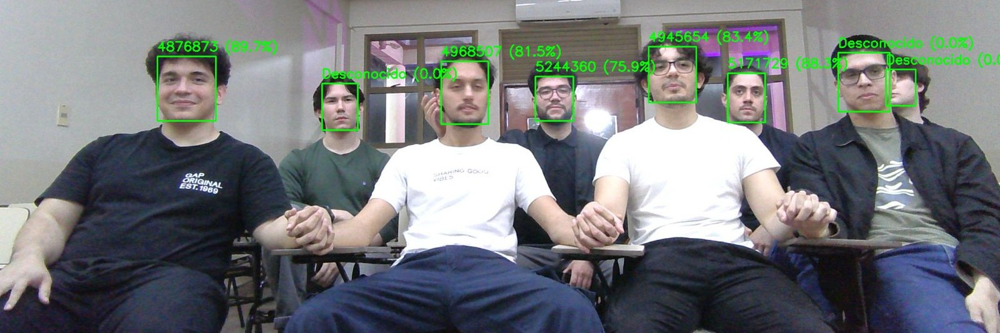

FPUNE
PROYECTO 01
Sistema de asistencia basado en reconocimiento facial
Desarrollo de un sistema automatizado de control de asistencia para la Facultad Politécnica de la Universidad Nacional del Este, basado en tecnologías de reconocimiento facial. Implementación de la lógica funcional del sistema, así como del diseño y desarrollo de la interfaz visual. El sistema utiliza una cámara instalada en aulas de la facultad para identificar personas registradas en la base de datos y registrar automáticamente su asistencia.